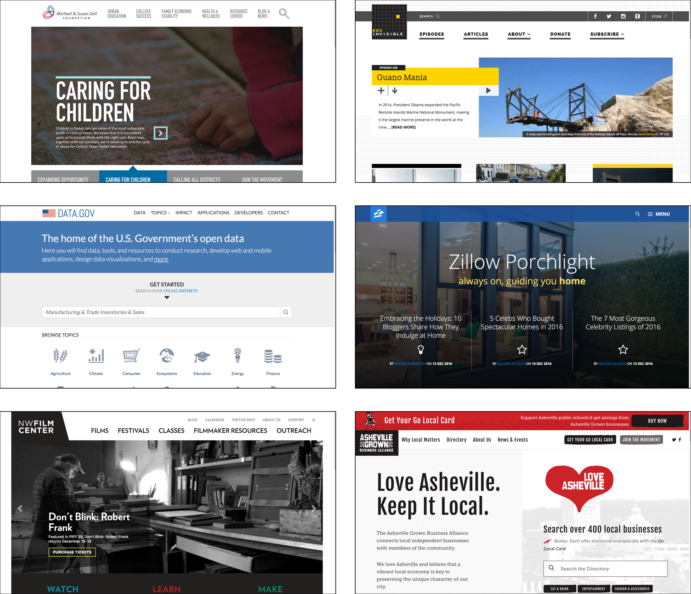
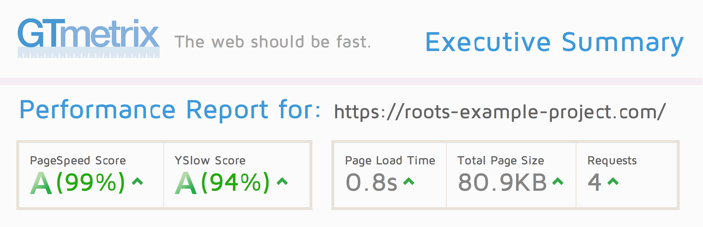

Why Sage?
There's been countless hours of research, development, and support put into Sage by the Roots team and community since 2011. We strive to always use and improve best-practices in the theme, and we're consistent at keeping the theme up to date.
Rather than coding an entire theme from scratch, Sage helps you get started, then gets out of the way. Sage is “delete-key friendly” and it's easy to remove any features that you don't need.
We do typically recommend that you don't try Sage as your first WordPress theme and instead give it a shot once you've got the basics covered. Underscores (_s) by Automattic is another popular starter theme, but it lacks any sort of front-end workflow and doesn't require a sane minimum-version requirement for PHP. If Underscores is a “1,000 hour head start”, Sage is a 10,000 hour head start.
What you'll find in Sage that you won't find in most other WordPress themes:
- A modern build process
- Modern PHP and requirements, along with PSR-2 coding standards (the most widely used and accepted coding standards used in the PHP community) rather than WordPress coding standards
- Better template file organization — no template files exist in the theme root
- DRY templates with template inheritance

Professionally maintained
At the time of writing, the Sage starter theme has over 9,000 stars and is the 15th most popular PHP project on GitHub. We see over 4,000 new Sage projects being created every month based on GitHub and Packagist statistics.
Issues are squashed extremely fast, whether on GitHub or on Roots Discourse.
The project maintainers communicate daily and we're generally very accepting of feedback and improvements.
Widely used and trusted
There are over 50,000 live websites that are based on Sage. Some popular sites and brands using Sage include:
- Amnesty International USA
- Bacardi
- D Magazine
- Discovery Kids
- GE
- Goodwill
- Hewlett Foundation
- HotPads
- Hulu
- Japan.com
- JetBlue
- Jobvite
- LendingTree
- Mad Libs
- Michael and Susan Dell Foundation
- Morton Salt
- Pied Piper (HBO)
- Progresso
- Quest Diagnostics
- Redpoint Ventures
- Sirius
- Top Hat
- University of Tennessee
- UPS
- US Government (Data.gov & US Embassy)
- WebMD
- Whitepages
- Women Deliver
- Zillow
Community support
Roots and Sage have a big support community behind it. Roots Discourse is a valuable resource with thousands of users and topics. The forum is very active, and topics are usually responded to within 15 hours.
A modern build process
The Sage theme has gone through lots of workflow changes over the years. Like almost every other WordPress theme, Sage initially didn't support any sort of build process. The theme has previously used Grunt and then Gulp, but currently uses Webpack.
Webpack is responsible for:
- Compiling assets
- Optimizing images with optipng, gifsicle, pngquant, and svgo
By using the Sage build process you will see orders of magnitude of difference in page load time compared to non-optimized assets:

Sage does a good job at optimizing content efficiency, part of Google's web fundamentals and best practices for modern web development. These performance optimizations include:
- Eliminating unnecessary downloads
- Optimizing encoding and transfer size of text-based assets
- Image optimization
Blade templating engine
WordPress lacks a real templating engine (follow WordPress core ticket #33472 by Kalen Johnson from Roots), and Sage has adopted Blade as a templating engine with version 9.
Blade syntax is more elegant, concise, readable, more powerful, and easier to write than just PHP tags. You could even bind PHP data to Vue.js properties using Blade. The most popular PHP framework Laravel has been using blade for a while now, and has been nothing but great. You shouldn’t be against it just because it’s one more thing you have to learn. Functionality-wise, Blade is just amazing IMO.
— webber on Roots Discourse
Template inheritance
Outside of WordPress land, most templating engines like Twig and Jade implement the concept of template inheritance.
With template inheritance, a base layout template defines blocks containing the common website elements, which are inherited by child templates. It is more flexible than alternative techniques, such as including common page elements (like header and footer files) because each block can be overridden within a child.
Template inheritance is good for WordPress specifically because it keeps things DRY. By using the Blade templating engine, we've removed repeated markup from individual templates and put it into a single file.
Take a look at page.php in Underscores:
<?php get_header(); ?>
<div id="primary" class="content-area">
<main id="main" class="site-main">
<?php
while ( have_posts() ) : the_post();
get_template_part( 'template-parts/content', 'page' );
// If comments are open or we have at least one comment, load up the comment template.
if ( comments_open() || get_comments_number() ) :
comments_template();
endif;
endwhile; // End of the loop.
?>
</main><!-- #main -->
</div><!-- #primary -->
<?php
get_sidebar();
get_footer();
Then compare it to page.blade.php in Sage:
@extends('layouts.app')
@section('content')
@while(have_posts()) @php(the_post())
@include('partials.page-header')
@include('partials.content-page')
@endwhile
@endsection
Normal WordPress themes will always contain get_header, get_sidebar, and get_footer in every template, along with the HTML markup for the content containers.
In Sage, the base layout template (resources/views/layouts/app.blade.php) defines the common elements that get inherited by templates:
<!doctype html>
<html @php(language_attributes())>
@include('partials.head')
<body @php(body_class())>
@php(do_action('get_header'))
@include('partials.header')
<div class="wrap container" role="document">
<div class="content">
<main class="main">
@yield('content')
</main>
@if (App\display_sidebar())
<aside class="sidebar">
@include('partials.sidebar')
</aside>
@endif
</div>
</div>
@php(do_action('get_footer'))
@include('partials.footer')
@php(wp_footer())
</body>
</html>
Sage helps you become a better developer
Learn by unlearning. Be curious, humble, open-minded. Be prepared to let go of what you think you already know. Don't jump to conclusions. Don't trust your assumptions. Don't be afraid to begin again.
— Nicolas Gallagher
If you were to only work with any of the default WordPress themes, Underscores, ThemeForest themes, or almost all of the themes that exist in the WordPress ecosystem, you could miss out on stepping outside of the WordPress bubble and using more modern development practices.
The barrier to entry for Sage is lower than you might think! You won't need to know all of the ins and outs of tools such as Webpack, Composer and Blade. You'll learn what's necessary to develop a modern WordPress theme, and you'll be able to apply those skills beyond just WordPress development.
Here's what some members of the Roots community have had to say:
Roots has helped me understand Gulp on a much deeper level than if I’d just ventured into that world on my own. It’s even forced me to actually utilize the modularity of Bootstrap more effectively. I used to discount frameworks as being unnecessary overhead, but I didn't really get them until I started using Bootstrap as it's included in Roots.
— Vincent Magilone
I’ve been back and forth between Bones and Sage for my work, but it’s Roots that has had the biggest impact on my learning, my efficiency and the quality of my work. The various Roots projects have always pushed me to learn new things (even when I wasn’t comfortable with them) over the last 3 or so years. Less, Sass, Grunt, Gulp, Bower and Yeoman all come immediately to mind as technologies I dove into as a direct result of using Sage.
— Jimmy Smutek
Sage, Bedrock and Trellis by Roots have challenged me to become a better WordPress developer over the years + modernize my toolset.
— Eric Iffland
I had used Bootstrap a bit, but learnt Less and then Sass with Roots/Sage. I'd say that's the best thing about Sage — the team behind it actively improves every version, it keeps you on your toes … and actually teaches you good practices for wider development rather than very WP specific stuff.
— Steve Honey
Sage is great for a number of reasons. For me, it strikes a nice balance between a “too much stuff” that a framework brings and “not enough stuff” a theme like Underscores brings. It's also robust and as object oriented as a theme can be.
— Justin Hall